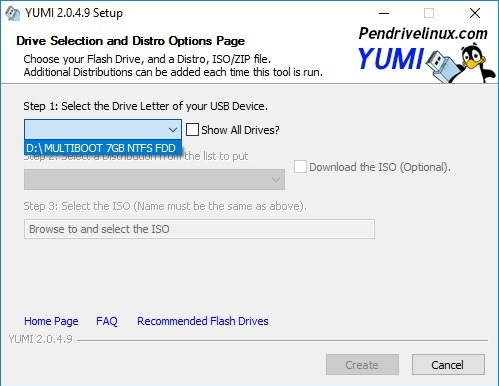

Introduction
This how-to article will go over creating a multiple operating system flash drive so that you can install your desired operating system on any PC. This is generally used to install any type of Windows or Linux distribution. We will mainly be using YUMI Multiboot. There is already some good documentation for it but since it's made for Linux, someone wanting a Windows multi-OS flashdrive might have some frustration. Best of all, it's free!
NOTE:These instructions are for Windows PC.
To get started, we're going to need a few things:
- YUMI(Your Universal Multiboot Installer) Program Download here.
- USB Flashdrive formatted for Fat32 or NTFS (Recommended 8GB or more)
- PC that boot from USB and is Windows 7/8/10 or Linux/MAC with WINE
- Your selection of ISOs (image files).
NOTE: If you have an installation CD and want to extract the ISO from it, learn how by using PowerISO.
For reference, here's a table of common ISOs people use and their file size so you can choose an appropriate sized flashdrive:
| Windows 7 32bit | 2.5GB | Windows 7 64bit | 3.2GB | Windows 10 32bit | 2.8GB |
| Ubuntu 14 32bit | 1.0GB | Ubuntu 14 64bit | 1.0GB | Windows 10 64bit | 3.8GB |
Step 1: Setup and Installation
After downloading the YUMI executable file, run it. There is no need for additional installation; the executable is all you need. Make sure you have your flashdrive on hand. You can format it yourself ahead of time but the utility will have an option to format your flashdrive for you.
IMPORTANT: Make sure you do not have any important files on your flashdrive as the flashdrive WILL get wiped.
Step 2: Flashdrive Setup
Plug in your flashdrive and it should show up as a drive letter in Step 1 of YUMI. Confirm it is the right flashdrive by double-checking the size reading and drive letter. To verify the drive letter or to find out what it is, open a file explorer to see what drive letter is given to your flashdrive.
Formatting the flashdrive: use either file explorer and right-click the flashdrive to reformat it to FAT32 or NTFS OR you can select the format options in YUMI after you selected the appropriate drive.
IMPORTANT:At this point, this WILL wipe the flashdrive. Triple-check that there is no data that needs to be retained on the flashdrive before proceeding.
Step 3: Installing ISO Distributions
Now you're ready to install whatever you want with whatever ISO you may have! Select your drive (it may be necessary to select "show all drives" if yours doesn't show up) and then proceed to choose what you are installing.
For installing Windows OS:
Select "Single Windows Vista/7/8/10 Installer".
Then proceed to click "Browse" to then find and select the ISO you would like to install.

Tip: Start from the lowest/older version OS you have, then install the more recent ones since they use the same setup files and will reduce how much space used on the flashdrive. I.E. Windows 7 32bit, then Windows 7 64bit, THEN Windows 10 32bit.
Proceed when you have selected it and it should now extract on to your flashdrive. Repeat until you have all distributions you need.
For installing Linux Distributions:
Since YUMI is Linux based, they have listed nearly almost distribution on the list so take your time and select the proper one.
Even so, the most common Linux desktop OS is Ubuntu which can be downloaded for free here:Download.
This is especially useful to those who need an operating computer without needing to buy an expensive Windows OS especially if you are building your own computer.
For installing other ISOs:
If the list doesn't have your ISO listed or it's some other executable ISO for other needs (such as a repair or data recovery disc) then all you need to do is select "Unlisted ISO via GRUB".
You may try out the other unlisted ISO bootloaders, but I have the best luck with GRUB.
Step 3 Optional: Uninstalling ISO Distributions
If you accidentally installed the wrong ISO, or you're running out of space, or for some other reason that requires you to uninstall a specific ISO, it's still possible to do so.
All you need to do is select the "Uninstall Mode" and it should populate a list of ISOs that are currently on your flashdrive. Select the one you want to uninstall and click "Remove".
Tip: The storage used on the flashdrive may not change dramatically after removing the distribution so if you're dealing with the problem of not having enough space, it may be better to wipe the entire flashdrive and start all over again.
Step 4: Verify
Now you're done! To make sure it works, go ahead and either use your PC to "boot from USB" (this is different depending on the computer's motherboard so you may have to search on how to do this) or you may use a freeware program called MobaLiveCD. Instructions can be found here:Check If USB is Bootable Windows
Conclusion
Hope you didn't have much trouble and if you managed to get this far, congratulations! Enjoy your own personal bootable multi-OS flashdrive! This is especially useful for people who help out their friends who build their own PCs or have harddrive crashes that they need to get back to business as soon as possible or for some who just want an upgrade while being frugal and not carrying a bunch of installation discs. I hope you enjoyed this tutorial and if you find any errors or have some comments or criticism, feel free to message me or click on the "Contact" button in the navigation bar. Enjoy!